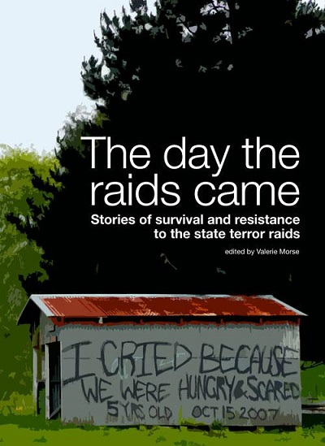

Books from Aotearoa for a world beyond capitalism and colonialism.
|  |
The Day the Raids Came: Stories of Survival and Resistance to the State Terror Raids
An oral history of the Operation 8 raids edited by Valerie Morse. On October 15th, 2007 an estimated 300 police raided houses all over Aotearoa New Zealand and arrested people based on warrants issued under the Terrorism Suppression Act. Lives were turned upside down as the police searched for evidence of ‘terrorism’. This book is a collection of oral history interviews of people affected by those raids and the aftermath: defendants, family, supporters and other people subject to the state’s coercive power on that day. The case is the first ever attempted using the Terrorism Suppression Act, a piece of legislation enacted in reponse to the 9/11 events in New York and Washington DC. The terrorism charges were not brought, but people arrested continue to face a long journey to freedom as the state seeks to punish political activists and to reinforce the status quo. Originally published by Rebel Press in 2010. Re-published September 2022. ISBN 9780473175627 Currently out of print. Please let us know if you would like us to re-print it. |
home | pānui / newsletter | LeftEquator@gmail.com | Mastodon | FB | IG | TW